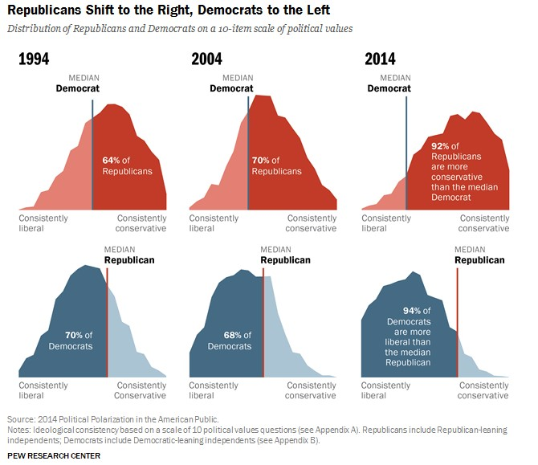

flowchart LR Algorithmes--Renforcement--> B(Exposition Sélective) Algorithmes --recommandation--> Homophilie Algorithmes--nudge--> C(Attention Selective) Homophilie --imitation--> C(Attention Selective) Homophilie --> B(Exposition Sélective) Homophilie --conformisme--> D(Polarisation) B[Exposition Sélective] --> C(Attention Selective) C(Attention Selective) --> D(Polarisation) B[Exposition Sélective] --chambre d'écho--> D(Polarisation)
Le débat public se nourrit souvent plus d’hypothèses que de faits, il emploie la théorie moins pour comprendre le monde que pour lui appliquer un cadre d’analyse auquel on adhère sans critique, au risque d’en faire un cadre idéologique. La théorie l’effet de polarisation des réseaux sociaux est un bon exemple, nourrissant la défiance qu’on leur témoigne, en attribuant leurs effets aux dispositifs algorithmique, et justifiant ainsila nécessité de les réguler. Or cette thèse trouve un soutien modeste dans les études empiriques.

Popularisée par Pariser (2012), la thèse des bulles de filtre, et celle des chambres d’écho, suggère que les opinions tendent à se polariser et se se radicaliser quand elles se forment dans le bain des réseaux sociaux que les algorithmes font bouillonner.
C’est une hypothèse qui trouve sa raison dans le concept de l’attachement préférentiel Barabási (2009), qui génère une topologie caractéristique des réseaux : la distribution puissance du nombre de liens : une minorité est liée à un grand nombre de nœud, une très grande majorité est peu liée aux autres. Ce mécanisme fondamental génère une exposition sélective : chaque nouveau nœud, dans le réseau se nouant aux nœuds les plus populaires.
De manière plus sociologique, l’attachement préférentiel joue de manière un peu différente. Il est d’abord gouverné par le fait qu’on tend à s’exposer à des gens qui nous ressemblent. C’est une hypothèse raisonnable car elle se fonde sur un mécanisme d’homophilie que les chercheurs ont mis à jour depuis longtemps, distinguant d’ailleurs celle induite par la proximité dans le réseau (les amis de nos amis) de celle générée par similarités d’intérêt (Kossinets and Watts (2009)).
Sur un plan psychologique, un second mécanisme peut être ajouté, celui de l’attention sélective (Janiszewski, Kuo, and Tavassoli (2013)) surtout si elle se conjugue à des biais de confirmation (Nickerson (1998)).
Le troisième mécanisme est technologique, c’est un mécanisme de renforcement qui se joue dans les systèmes de recommandation de nouveaux contacts et de contenus, les algorithmes amplifieraient l’exposition des sujets à ceux avec lesquels ils partagent les mêmes idées. Ce sont les chambres d’écho.
Quand l’ensemble de ces mécanismes s’associent, chacun se trouverait ainsi plus ou moins rapidement isolé dans une bulle dont la surface est le prisme de nos préférences. Un article de Geschke, Lorenz, and Holtz (2019) en donne une bonne idée en distinguant justement ces trois type de filtres : individuels (notamment les biais de confirmation mais aussi de recherche de diversité), sociaux (homophilie), et technologiques (moteurs de recommandation). En examinant leurs interactions par des modèles d’agents (ABM), ils montrent que la polarisation émerge quand il y a interaction entre la diffusion centrale de l’information (mass media), partage social de cette information et activation de systèmes de recommandation. Ces derniers pouvant modérer la polarisation lorsque ce qui est recommandé va dans le sens de la diversité de l’information.
Ouvrons une rapide parenthèse, les algorithmes de recommandation servent des buts variés. En général, l’objectif est d’incité l’utilisation à consulter le plus de page possible, pour être exposé aux plus de publicité, ou au plus d’occasion de consommer. Mais des design différents peuvent être proposer pour résoudre d’autre problème, dans les plateformes de musique, l’ennui est un danger et très tôt on a penser introduire des technniques de serendipité, le moyen de produire des saut dans les cheminement thématique. Les algoritmiques ne sont pas monolithique, n dans leur conception, si dans leurs objectifs.
Fermons la parenthèse et revenons à la question principale qui est d’attribuer aux réseaux sociaux une responsabilité dans le phénomène de la polarisation politique, qui se manifeste tant par l’écart croissant entre position relative des valeurs de droite et gauche, que par l’intensité du rejet des uns par les autres.
L’hypothèse est que ce phénomène trouve sa source justement dans ces hypothétiques bulle de filtre, que la technologie en isolant ou accroissant la tendance à l’isolationnisme, produit à la fois une radicalisation des opinions et l’incapacité t’entendre les arguments de l’autre partie.
Pour que cette théorie le deviennent vraiment, et ainsi échappe à l’appropriation de l’idéologie, il est nécessaire que les faits ne la démentent pas. Depuis quelques années, des études à grandes échelle et pour une bonne part expérimentales, ont été menées et leurs résultats publiés. Ils sont extrêmement modestes sur l’effet de polarisation, tout en démontrant l’importance des effets d’exposition.
Schématisons l’idée :
La première vient de facebook Kramer, Guillory, and Hancock (2014), elle a été controversée dans la mesure où les sujets n’ont pas été informés. Il s’agissait sur une vaste population de contrôler le feed en réduisant les messages positifs et négatifs et en observant l’effet sur le caractère négatif ou positif de la production des sujets exposés. L’hypothèse a été validée mais avec un effet finalement très faible. Si il y a contagion, est est superficielle.
Huszár et al. (2022) ont conduit quant à eux, un audit de Twitter menant une sorte d’expérience naturelle en comparant un groupe de compte auquel Twitter n’a jamais appliqué ses algorithmes (depuis 2016) et un autre groupe, expérimental, qui subit la curation automatisée de contenu. En construisant un indicateur de multiplication, il compare dans 7 pays les effets sur les tweets produits par les politiques et selon leurs appartenance. Il apparaît que l’effet d’amplification joue, mieux à droite qu’à gauche comme attendu, mais plus pour les partis centraux que pour les extrêmes. Dans le même esprit González-Bailón et al. (2023) montre le même phénomène en analysant les contenus vu par 208 millions de compte facebook : c’est vers l’extreme droit que la proportion de pages et de groupes ” douteux” est la plus grande, ségrégation de la consommation de news. Très récemment Guess et al. (2023) , et Nyhan et al. (2023) ont testés spécifiquement l’effet des algorithmes de recommandation en randomisation, au cours de la campagne présidentielle américaine de 2020, l’exposition soit aux algorithmes habituelles, soit un simple fil ante-chronologique. Avec ce dernier les temps passés sur la plateformes se réduisent, ainsi que les likes et commentaires (réduction de moitié) - ce qui au passage confirme l’efficacité des algos pour accroître l’exposition à la pub - et la diversité des contenus s’accroît. En revanche, le degré de polarisation et plus largement les attitudes ne semblent pas changer.
Ces résultats empiriques sont si modestes, qu’un nouvel argument émerge du débat par exemple. C’est celui des petits effets (Götz, Gosling, and Rentfrow (2022)) qui s’accumulent, éventuellement se multiplient et finalement ne sont pas incompatibles avec ce qui est observé. C’est une conception qui a trouvé rapidement sa contradiction Primbs et al. (2023).
Finalement, les choses apparaissent plus plus complexes qu’elle ne sont, à la fois par les hypothèses, mais aussi par les processus. L’attention ne sélectionne par le même, elle peut favoriser le différent, elle est aussi sans doute plus aléatoire qu’on ne pense. L’homophilie n’est peut être pas si systématique, la réalité empirique des réseaux sociaux est qu’on jamais affaire, ou rarement à des composants isolés : la topologie générale est celle d’un macro-composant, chacun est lié à tous et à moins de 6 degré de liberté. Les systèmes de recommandation ne sont pas si efficace que ça, et dans certain cas (musique) intègre des composants de diversité. Leur design n’est pas monolithique. Et n’oublions pas que la crédibilité de l’information qui vient des réseaux sociaux est bien plus faible que les autres médias, ce qu’on y cherche c’est l’étonnant, l’amusant, le sensationnel, bref le divertissement.La complexité vient aussi de la segmentation des publics, l’asymétrie entre les comportement très droite et très à gauche en témoigne.
Il reste aussi un défi méthodologique, le débat des petits effets en donne le la, de concert avec la capacité d’expérimentation massive et in vivo, le rôle des méthode ABM devrait jouer un rôle plus grand, le traitement des données massives devant servir une connaissance empirique plus fine, qui ne se contente pas de p-values mais d’une évaluation précise des paramètres des modèles testés.
Peut-être finalement faut-il recentrer la question. La polarisation, au sens d’un radicalisation des opinions, qui semble se structurer dans ce siècle bien entamé entre une conception conservatrice, paranoïaque, qui fonde ses valeurs dans l’idée que le clan est menacé,alors qu’il est une majorité, moins en nombre qu’en autorité, et cette conception encore progressiste, qui doute d’un contrat social primordial mais ne renonce pas pas à le réaliser, dépends assez eu des technologies qui ne font que fournir les propulsions utiles à leur propagation.
moscovici.
References
Barabási, Albert-László. 2009. “Scale-Free Networks: A Decade and Beyond.” Science 325 (5939): 412–13. https://doi.org/10.1126/science.1173299.
Geschke, Daniel, Jan Lorenz, and Peter Holtz. 2019. “The Triple-Filter Bubble: Using Agent-Based Modelling to Test a Meta-Theoretical Framework for the Emergence of Filter Bubbles and Echo Chambers.” British Journal of Social Psychology 58 (1): 129–49. https://doi.org/10.1111/bjso.12286.
González-Bailón, Sandra, David Lazer, Pablo Barberá, Meiqing Zhang, Hunt Allcott, Taylor Brown, Adriana Crespo-Tenorio, et al. 2023. “Asymmetric Ideological Segregation in Exposure to Political News on Facebook.” Science 381 (6656): 392–98. https://doi.org/10.1126/science.ade7138.
Götz, Friedrich M., Samuel D. Gosling, and Peter J. Rentfrow. 2022. “Small Effects: The Indispensable Foundation for a Cumulative Psychological Science.” Perspectives on Psychological Science 17 (1): 205–15. https://doi.org/10.1177/1745691620984483.
Guess, Andrew M., Neil Malhotra, Jennifer Pan, Pablo Barberá, Hunt Allcott, Taylor Brown, Adriana Crespo-Tenorio, et al. 2023. “How Do Social Media Feed Algorithms Affect Attitudes and Behavior in an Election Campaign?” Science 381 (6656): 398–404. https://doi.org/10.1126/science.abp9364.
Huszár, Ferenc, Sofia Ira Ktena, Conor O’Brien, Luca Belli, Andrew Schlaikjer, and Moritz Hardt. 2022. “Algorithmic Amplification of Politics on Twitter.” Proceedings of the National Academy of Sciences 119 (1): e2025334119. https://doi.org/10.1073/pnas.2025334119.
Janiszewski, Chris, Andrew Kuo, and Nader T. Tavassoli. 2013. “The Influence of Selective Attention and Inattention to Products on Subsequent Choice.” Journal of Consumer Research 39 (6): 1258–74. https://doi.org/10.1086/668234.
Kossinets, Gueorgi, and Duncan J. Watts. 2009. “Origins of Homophily in an Evolving Social Network.” American Journal of Sociology 115 (2): 405–50. https://doi.org/10.1086/599247.
Kramer, Adam D. I., Jamie E. Guillory, and Jeffrey T. Hancock. 2014. “Experimental Evidence of Massive-Scale Emotional Contagion Through Social Networks.” Proceedings of the National Academy of Sciences 111 (24): 8788–90. https://doi.org/10.1073/pnas.1320040111.
Nickerson, Raymond S. 1998. “Confirmation Bias: A Ubiquitous Phenomenon in Many Guises.” Review of General Psychology 2 (2): 175–220. https://doi.org/10.1037/1089-2680.2.2.175.
Nyhan, Brendan, Jaime Settle, Emily Thorson, Magdalena Wojcieszak, Pablo Barberá, Annie Y. Chen, Hunt Allcott, et al. 2023. “Like-Minded Sources on Facebook Are Prevalent but Not Polarizing.” Nature 620 (7972): 137–44. https://doi.org/10.1038/s41586-023-06297-w.
Pariser, Eli. 2012. The Filter Bubble: What the Internet Is Hiding from You. London: Penguin books.
Primbs, Maximilian A., Charlotte R. Pennington, Daniël Lakens, Miguel Alejandro A. Silan, Dwayne S. N. Lieck, Patrick S. Forscher, Erin M. Buchanan, and Samuel J. Westwood. 2023. “Are Small Effects the Indispensable Foundation for a Cumulative Psychological Science? A Reply to Götz Et Al. (2022).” Perspectives on Psychological Science 18 (2): 508–12. https://doi.org/10.1177/17456916221100420.